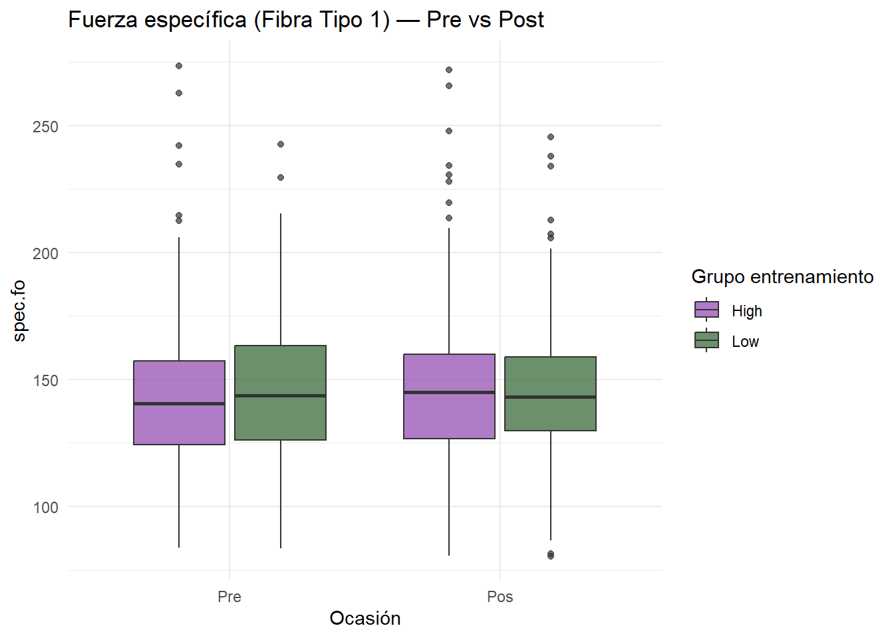
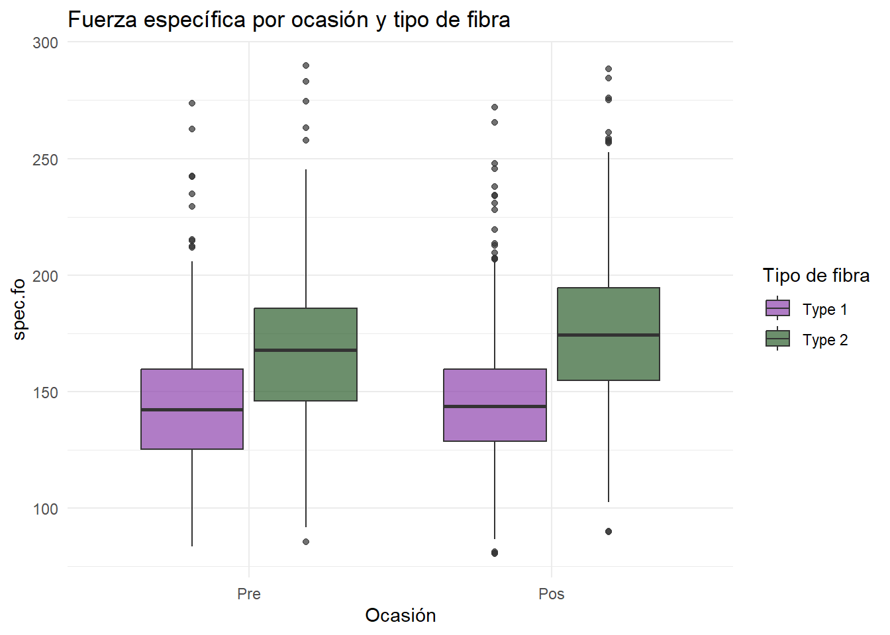
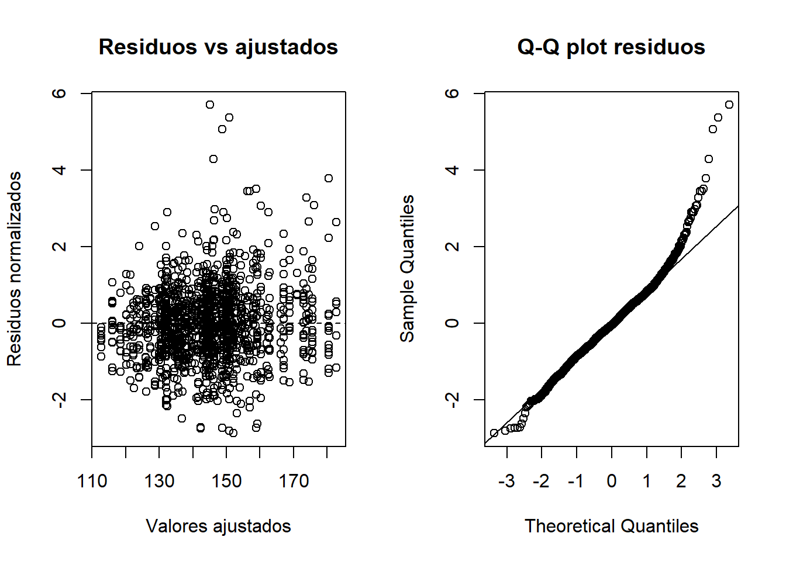

flowchart TD
A[Sujeto] --> B[Fibra Tipo 1]
A --> C[Fibra Tipo 2]
B --> D[Pre]
B --> E[Post]
C --> D
C --> E
D --> F[spec.fo]
E --> F
Modelo mixto pre-post con datos agrupados por sujeto (Pre-Post Clustered Mixed Model)
The PRT Trial💪 - Galecki & Burzykowski, Cap. 2, 3 y 17
1 💪Problema de investigación
El Progressive Resistance Training (PRT) Trial estudia el efecto del entrenamiento de resistencia sobre la fuerza específica de la fibra muscular (spec.fo), comparando mediciones pre y post entrenamiento.
Pregunta central: ¿Cambia la fuerza específica de la fibra muscular entre el periodo pre y post entrenamiento, y difiere este cambio según el grupo de entrenamiento (alta/baja intensidad), el tipo de fibra, y características del sujeto (sexo, edad, BMI)?
2 💪Diseño del PRT Trial
- 63 sujetos asignados a entrenamiento de alta o baja intensidad (
prt.f) - Cada sujeto tiene múltiples fibras musculares medidas
- Dos tipos de fibra: Tipo 1 y Tipo 2
- Dos ocasiones: Pre y Post entrenamiento
- Covariables de sujeto:
sex.f,age.f,bmi - Diseño pre-post con datos agrupados por sujeto
3 💪Estructura agrupada de los datos
Mostrar código
n_distinct(prt$id)[1] 63Mostrar código
nrow(prt)[1] 2471Mostrar código
table(prt$fiber.f, prt$occ.f)
Pre Pos
Type 1 670 629
Type 2 558 614Mostrar código
table(prt$prt.f)
High Low
1228 1243 4 💪Variables principales
| Variable | Nivel | Tipo | Rol |
|---|---|---|---|
spec.fo |
1 | Continua | Outcome — fuerza específica |
occ.f |
1 | Factor | Ocasión (Pre/Pos) |
fiber.f |
1 | Factor | Tipo de fibra (Type 1/Type 2) |
id |
2 | Identificador | Sujeto |
prt.f |
2 | Factor | Grupo de entrenamiento (High/Low) |
sex.f |
2 | Factor | Sexo |
age.f |
2 | Factor | Grupo de edad (Young/Old) |
bmi |
2 | Continua | Índice de masa corporal |
5 💪Exploración descriptiva


6 💪Estrategia de modelado (Cap. 17)
flowchart TD
A[M17.1\nFibra Tipo 1\nInterceptos aleatorios por ocasion] --> B{Heterogeneidad media-varianza?}
B -->|Si, varPower| C[M17.2\nVarianza dependiente de la media]
C --> D[M17.3\nAmbos tipos de fibra\n4 interceptos aleatorios]
D --> E[M17.4\nKronecker UN x UN]
E --> F[M17.5\nKronecker CS x CS]
F --> G[M17.6\nExtension conjunta\niso.fo y spec.fo]
7 💪M17.1 — Fibra Tipo 1, interceptos aleatorios por ocasión
Mostrar código
model17.1.fit <- lme(
lme.spec.form1,
random = ~ occ.f - 1 | id,
data = prt1,
method = "REML")
summary(model17.1.fit)Linear mixed-effects model fit by REML
Data: prt1
AIC BIC logLik
11936.49 11998.45 -5956.247
Random effects:
Formula: ~occ.f - 1 | id
Structure: General positive-definite, Log-Cholesky parametrization
StdDev Corr
occ.fPre 15.44891 occ.fP
occ.fPos 14.19376 0.759
Residual 22.48534
Fixed effects: list(lme.spec.form1)
Value Std.Error DF t-value p-value
(Intercept) 127.72408 15.416429 1234 8.284933 0.0000
prt.fLow 2.88589 4.338337 57 0.665205 0.5086
occ.fPos 4.70300 2.667168 1234 1.763293 0.0781
sex.fMale -1.38448 5.364030 57 -0.258105 0.7973
age.fOld 8.98440 5.154648 57 1.742970 0.0867
bmi 0.49137 0.578196 57 0.849826 0.3990
prt.fLow:occ.fPos -2.13291 3.749669 1234 -0.568825 0.5696
sex.fMale:age.fOld -12.67994 7.553458 57 -1.678694 0.0987
Correlation:
(Intr) prt.fL occ.fP sx.fMl ag.fOl bmi p.L:.P
prt.fLow -0.190
occ.fPos -0.098 0.365
sex.fMale -0.182 0.003 -0.017
age.fOld -0.303 0.000 -0.015 0.488
bmi -0.959 0.052 0.000 0.021 0.142
prt.fLow:occ.fPos 0.050 -0.501 -0.712 0.011 0.013 0.019
sex.fMale:age.fOld 0.214 -0.022 0.007 -0.712 -0.683 -0.102 0.005
Standardized Within-Group Residuals:
Min Q1 Med Q3 Max
-2.87532868 -0.60092784 -0.04631082 0.55384626 5.71077044
Number of Observations: 1299
Number of Groups: 63 Cada sujeto tiene dos interceptos aleatorios, uno para Pre y otro para Pos. La matriz D permite estimar la correlación entre ambos niveles de fuerza específica dentro del mismo sujeto.
8 💪Diagnóstico de M17.1

El patrón en forma de embudo sugiere que la varianza aumenta con la magnitud de los valores ajustados — motiva el siguiente modelo con
varPower().
9 💪M17.2: Modelo media-varianza con varPower()
Mostrar código
model17.2.fit <- update(
model17.1.fit,
weights = varPower(form = ~ fitted(.)),
data = prt1,
control = lmeControl(maxIter = 200, msMaxIter = 200))
anova(model17.1.fit, model17.2.fit) Model df AIC BIC logLik Test L.Ratio p-value
model17.1.fit 1 12 11936.50 11998.45 -5956.247
model17.2.fit 2 13 11894.95 11962.07 -5934.473 1 vs 2 43.54847 <.0001p < 0.001 →
varPower()mejora significativamente el ajuste. La varianza residual aumenta con la magnitud de la fuerza específica predicha.
10 💪M17.3 — Ambos tipos de fibra, 4 interceptos aleatorios
Mostrar código
model17.3.fit <- lme(
lme.spec.form3,
random = ~ occ.f:fiber.f - 1 | id,
data = prt,
method = "REML",
control = lmeControl(maxIter = 200, msMaxIter = 200))
summary(model17.3.fit)Linear mixed-effects model fit by REML
Data: prt
AIC BIC logLik
23084.28 23212.05 -11520.14
Random effects:
Formula: ~occ.f:fiber.f - 1 | id
Structure: General positive-definite, Log-Cholesky parametrization
StdDev Corr
occ.fPre:fiber.fType 1 15.77341 occ.fPr:.T1 occ.fPs:.T1 o.P:.2
occ.fPos:fiber.fType 1 13.58700 0.818
occ.fPre:fiber.fType 2 15.54424 0.867 0.521
occ.fPos:fiber.fType 2 15.71719 0.627 0.810 0.547
Residual 24.47724
Fixed effects: list(lme.spec.form3)
Value Std.Error DF t-value p-value
(Intercept) 129.61237 14.287860 2403 9.071503 0.0000
prt.fLow 1.95094 4.313130 57 0.452326 0.6528
occ.fPos 4.29930 2.503271 2403 1.717474 0.0860
sex.fMale -2.03681 5.021432 57 -0.405624 0.6865
age.fOld 8.69425 4.758699 57 1.827022 0.0729
bmi 0.39876 0.532209 57 0.749262 0.4568
fiber.fType 2 25.30181 2.404018 2403 10.524800 0.0000
prt.fLow:occ.fPos -1.13448 3.408133 2403 -0.332874 0.7393
sex.fMale:age.fOld -6.26137 6.965991 57 -0.898848 0.3725
prt.fLow:fiber.fType 2 -4.07776 2.912496 2403 -1.400090 0.1616
occ.fPos:fiber.fType 2 4.09432 2.372416 2403 1.725800 0.0845
Correlation:
(Intr) prt.fL occ.fP sx.fMl ag.fOl bmi fbr.T2 p.L:.P
prt.fLow -0.206
occ.fPos -0.117 0.340
sex.fMale -0.189 0.006 -0.010
age.fOld -0.318 0.011 0.009 0.497
bmi -0.954 0.056 0.005 0.026 0.153
fiber.fType 2 -0.068 0.197 0.083 0.005 -0.038 -0.006
prt.fLow:occ.fPos 0.070 -0.487 -0.685 0.008 -0.002 0.004 0.035
sex.fMale:age.fOld 0.229 -0.020 0.003 -0.723 -0.683 -0.114 0.005 0.003
prt.fLow:fiber.fType 2 0.052 -0.319 0.029 -0.012 0.010 -0.002 -0.633 -0.060
occ.fPos:fiber.fType 2 0.042 -0.005 -0.253 0.011 0.014 -0.006 -0.496 -0.007
s.M:.O p.L:.2
prt.fLow
occ.fPos
sex.fMale
age.fOld
bmi
fiber.fType 2
prt.fLow:occ.fPos
sex.fMale:age.fOld
prt.fLow:fiber.fType 2 -0.003
occ.fPos:fiber.fType 2 -0.010 0.024
Standardized Within-Group Residuals:
Min Q1 Med Q3 Max
-3.3348331 -0.6142387 -0.0324892 0.5640573 5.2963209
Number of Observations: 2471
Number of Groups: 63 Este modelo permite que cada sujeto tenga 4 interceptos aleatorios — uno por cada combinación de ocasión (Pre/Post) y tipo de fibra (1/2). La matriz de covarianza es no estructurada (4×4 general, simétrica positiva).
11 💪Comparación de modelos
| Modelo | Datos | Efectos aleatorios | Estructura residual | Decisión |
|---|---|---|---|---|
| M17.1 | Fibra Tipo 1 | 2 interceptos (Pre/Post) | Homogénea | Base |
| M17.2 | Fibra Tipo 1 | 2 interceptos (Pre/Post) | varPower | Mejora (p<0.001) |
| M17.3 | Ambas fibras | 4 interceptos (occ×fibra) | Homogénea | Matriz D 4×4 general |
12 💪Interpretación de M17.3
| Efecto | Estimacion | EE | p | |
|---|---|---|---|---|
| (Intercept) | (Intercept) | 129.612 | 14.288 | 0.0000 |
| prt.fLow | prt.fLow | 1.951 | 4.313 | 0.6528 |
| occ.fPos | occ.fPos | 4.299 | 2.503 | 0.0860 |
| sex.fMale | sex.fMale | -2.037 | 5.021 | 0.6865 |
| age.fOld | age.fOld | 8.694 | 4.759 | 0.0729 |
| bmi | bmi | 0.399 | 0.532 | 0.4568 |
| fiber.fType 2 | fiber.fType 2 | 25.302 | 2.404 | 0.0000 |
| prt.fLow:occ.fPos | prt.fLow:occ.fPos | -1.134 | 3.408 | 0.7393 |
| sex.fMale:age.fOld | sex.fMale:age.fOld | -6.261 | 6.966 | 0.3725 |
| prt.fLow:fiber.fType 2 | prt.fLow:fiber.fType 2 | -4.078 | 2.912 | 0.1616 |
| occ.fPos:fiber.fType 2 | occ.fPos:fiber.fType 2 | 4.094 | 2.372 | 0.0845 |
fiber.fType 2— las fibras tipo 2 tienen mayor fuerza específica basal que las tipo 1occ.fPos— cambio post-entrenamiento para la categoría de referencia del modeloage.fOld— los sujetos del grupo de mayor edad muestran diferencias respecto al grupo joven- Las interacciones asociadas al grupo de entrenamiento se revisan para evaluar si el cambio pre-post difiere entre intensidades de entrenamiento.
13 💪M17.4 a M17.6 — Estructuras Kronecker
Galecki extiende M17.3 estructurando la matriz de covarianza 4×4 mediante productos de Kronecker, lo que permite separar la variación atribuible al tipo de fibra de la atribuible a la ocasión:
- M17.4 — estructura Kronecker UN × UN (no estructurada × no estructurada)
- M17.5 — estructura más parsimoniosa Kronecker CS × CS (simetría compuesta × simetría compuesta)
- M17.6 — extensión conjunta para analizar simultáneamente
iso.foyspec.focomo dos outcomes correlacionados
Mostrar código
# M17.4 — Kronecker UN x UN
# Requiere la clase pdKronecker usada en el material del libro
pdId <- pdIdent(~ 1)
pd1UN <- pdLogChol(~ fiber.f - 1)
pd2UN <- pdLogChol(~ occ.f - 1)
pdL1 <- list(
X = pdId,
FiberType = pd1UN,
PrePos = pd2UN)
model17.4.fit <- lme(
lme.spec.form3,
random = list(id = pdKronecker(pdL1)),
data = prt,
method = "REML")
# M17.5 — Kronecker CS x CS
pdId <- pdIdent(~ 1)
pd1CS <- pdCompSymm(~ fiber.f - 1)
pd2CS <- pdCompSymm(~ occ.f - 1)
pdL2 <- list(
X = pdId,
FiberType = pd1CS,
PrePos = pd2CS)
model17.5.fit <- lme(
lme.spec.form3,
random = list(id = pdKronecker(pdL2)),
data = prt,
method = "REML")
anova(model17.3.fit, model17.4.fit, model17.5.fit)Los modelos M17.4–M17.6 requieren la clase
pdKronecker, usada por Galecki para estructurar la matriz D mediante productos de Kronecker. Si la función no está disponible en la instalación local, estos bloques se dejan como código conceptual.
14 💪 Conclusiones
- El PRT Trial tiene estructura pre-post con datos agrupados por sujeto
- En el análisis de fibras Tipo 1, los diagnósticos de M17.1 sugieren heterocedasticidad: la varianza residual aumenta con la media
- M17.2 incorpora
varPower()y mejora significativamente el ajuste respecto a M17.1 - M17.3 extiende el análisis a ambos tipos de fibra, permitiendo 4 interceptos aleatorios correlacionados por sujeto (uno por cada combinación ocasión × tipo de fibra)
- Las fibras tipo 1 y tipo 2 difieren en su nivel basal de fuerza específica
- M17.4 y M17.5 estructuran esa matriz de covarianza 4×4 mediante productos de Kronecker, separando la variación por tipo de fibra de la variación por ocasión, para obtener modelos más parsimoniosos
El PRT Trial corresponde a un diseño pre-post con mediciones de fibras musculares agrupadas dentro de sujetos. El análisis muestra cómo especificar modelos lineales mixtos con estructuras de efectos aleatorios cada vez más complejas, comenzando con fibras tipo 1 y extendiendo a ambos tipos de fibra mediante productos de Kronecker.